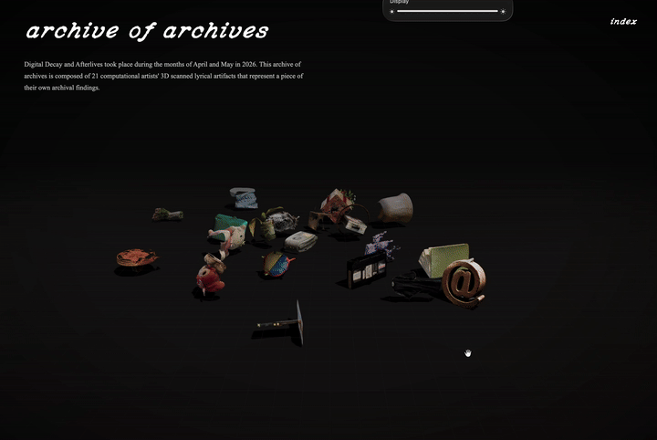
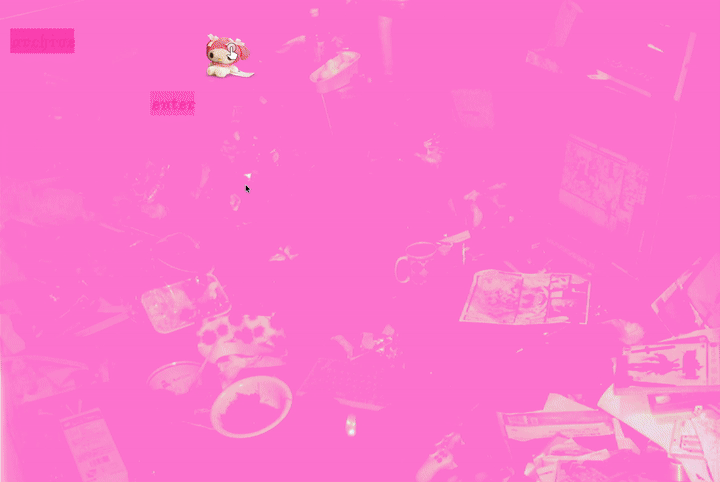
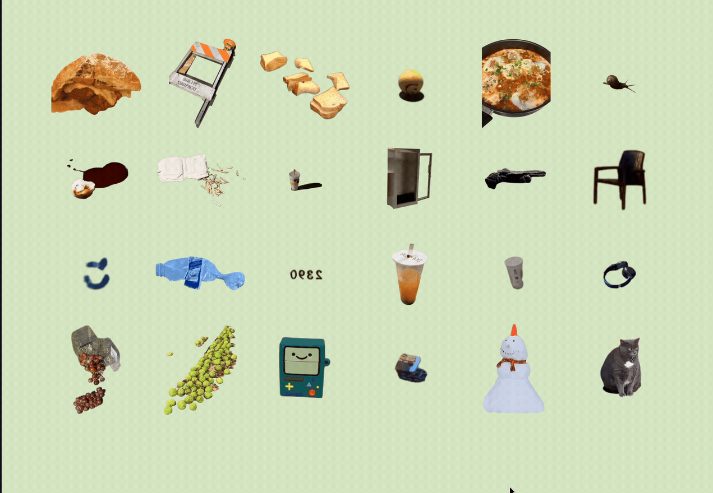
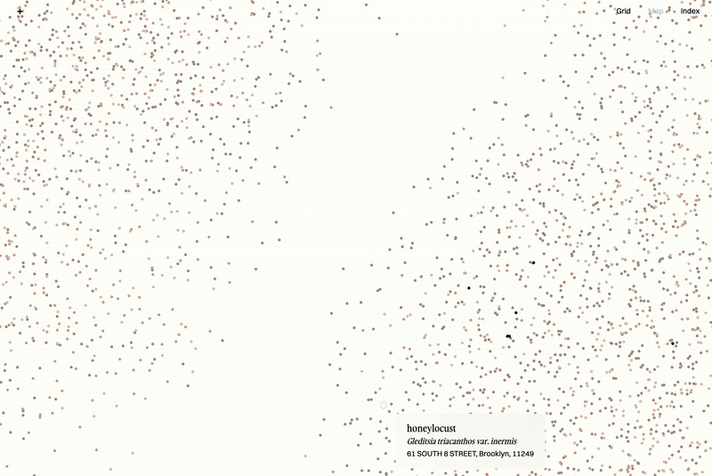

archives of archives

Archive of Archives is a site accumulating the work of those who participated in Digital Decay and Afterlives at School for Poetic Computation.
Each archive is represented by a 3D object that was scanned and uploaded. The archives were created through a combination of web scraping and traversing the internet to build a collection of digital artifacts on are.na and using the API to visualize them creatively as a website.


